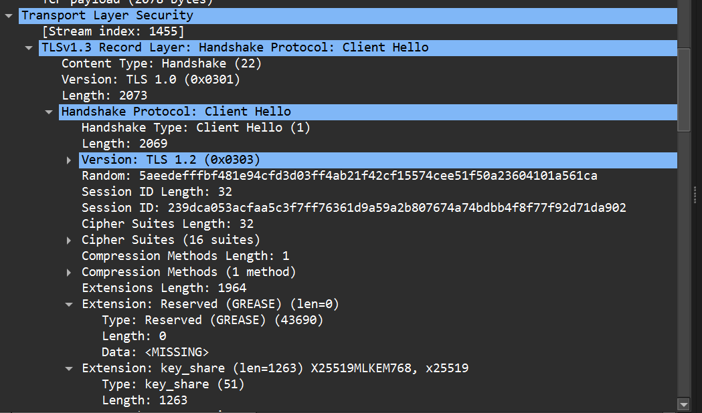
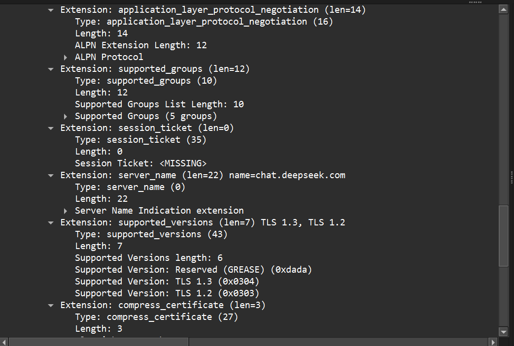
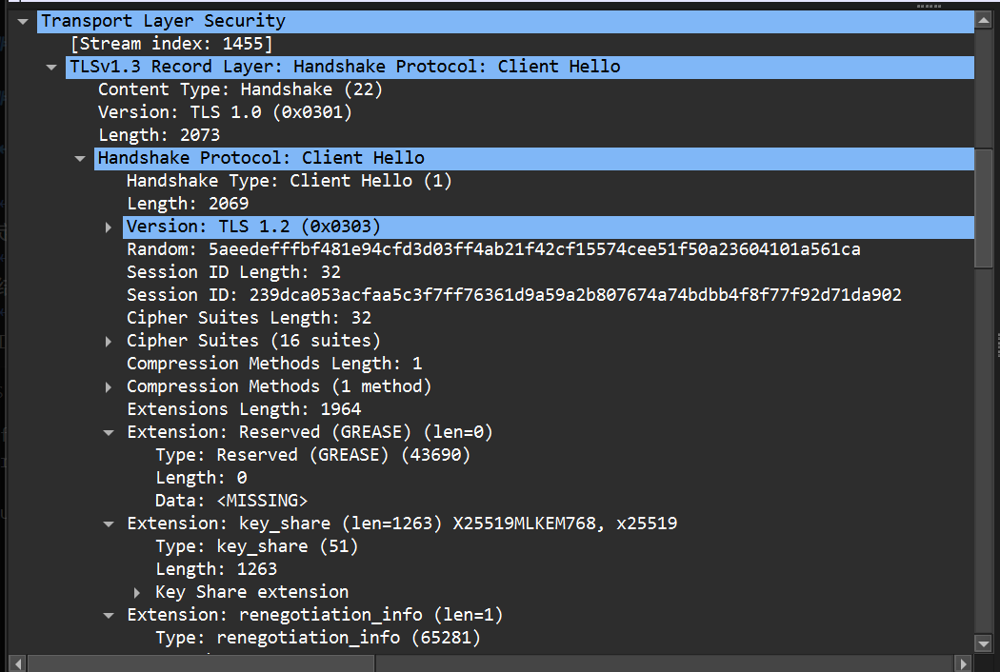
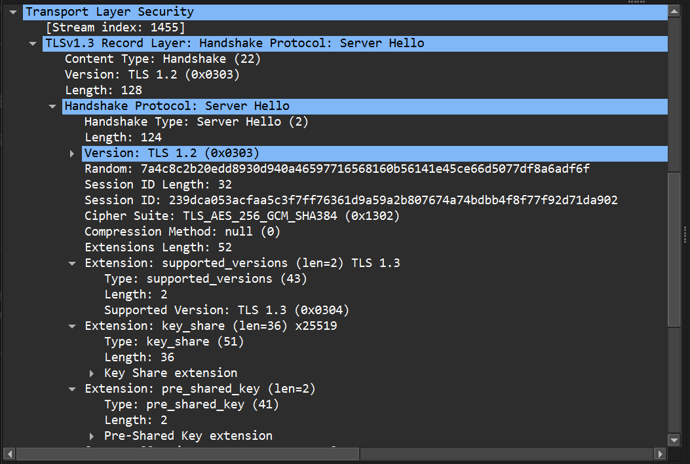

Wireshark 抓包实验-5 实验报告
2. 实验题目及指导
抓包实验 1：观察 HTTP 数据包
(1) HTTP 使用的传输层协议是什么？
HTTP 协议使用的传输层协议是 TCP。它通过 TCP 建立可靠的连接后进行数据交换。
(2) HTTP 请求包信息
请求方法：GET Host：example.com URL：/ （根目录） HTTP 版本：HTTP/1.1

(3) HTTP 响应包信息
状态码：200 OK Content-Type：text/html; charset=UTF-8

观察 TLS (HTTPS) 数据包
(4) TLS 版本及内容可见性
TLS 版本： TLS 1.3。 内容可见性：无法看到具体的 HTTP 请求或响应内容。 原因：由于 TLS 协议对应用层数据进行了加密传输，在 Wireshark 中只能看到加密后的 Application Data，确保了数据的私密性。  
(5) HTTPS 整体交互流程简述
HTTPS 流程主要包括：
- TCP 三次握手建立基础连接。
- TLS 握手：客户端发送
Client Hello，服务器回复Server Hello、证书及密钥交换信息。 - 加密传输：双方协商对称加密密钥后，开始传输加密的
Application Data。  

3. 简述题
(1) 分析 HTTP 头部与 IP/TCP 头的设计思路差异
表现形式：IP/TCP 头部采用二进制定长/偏移设计，字段位置固定（如协议号始终在 IP 头的固定偏移处），旨在提高硬件处理和转发效率。 文本化 vs 二进制：HTTP 头部采用 ASCII 文本形式（Key-Value 结构），每行以回车换行符结束。 扩展性：HTTP 设计思路侧重于灵活性与可读性，允许通过自定义 Header 轻松扩展功能；而 IP/TCP 头部设计更侧重于传输效率与低开销。